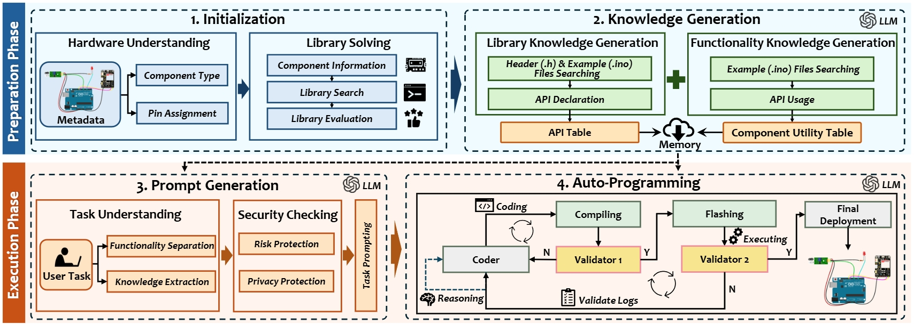
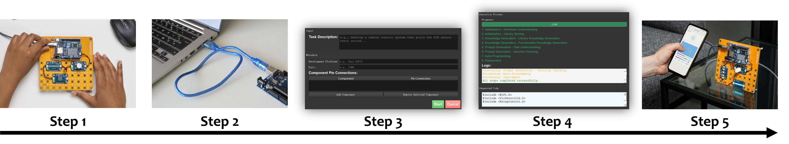

Embedded IoT system development is crucial for enabling seamless connectivity and functionality across a wide range of applications. However, such a complex process requires cross-domain knowledge of hardware and software and hence often necessitates direct developer involvement, making it labor-intensive, time-consuming, and error-prone. To address this challenge, this paper introduces EmbedGenius, the first fully automated software development platform for general-purpose embedded IoT systems. The key idea is to leverage the reasoning ability of Large Language Models (LLMs) and embedded system expertise to automate the hardware-in-the-loop development process. The main methods include a component-aware library resolution method for addressing hardware dependencies, a library knowledge generation method that injects utility domain knowledge into LLMs, and an auto-programming method that ensures successful deployment. We evaluate EmbedGenius's performance across 71 modules and four mainstream embedded development platforms with over 350 IoT tasks. Experimental results show that EmbedGenius can generate codes with an accuracy of 95.7% and complete tasks with a success rate of 86.5%, surpassing human-in-the-loop baselines by 15.6%--37.7% and 25.5%--53.4%, respectively. We also show EmbedGenius’s potential through case studies in environmental monitoring and remote control systems development.
EmbedGenius automates the entire embedded development process, from setup to final code flashing. Follow these simple steps:

Step 1: Prepare Your Hardware
Ensure that your embedded device (e.g., Arduino board) is ready and properly set up.
Step 2: Connect Your Device to Your Laptop
Use the appropriate cable to link your embedded device to your laptop.
Step 3: Open the EmbedGenius App
Launch the EmbedGenius application on your laptop. Enter the task description and relevant metadata, specifying the functionality and requirements of your project. Once you're ready, press the "Start" button to begin the automation process.
Step 4: Automate the Development Process
EmbedGenius will automatically generate the code, resolve library dependencies, perform logic checks, and handle hardware interfacing. Once everything is ready, it will compile the code and flash it directly to your embedded device, ensuring everything works as expected.
Step 5: Enjoy Your Fully Developed System
With the code successfully flashed, your system is now ready to use—enjoy your fully developed embedded solution!
Description: Extract API information from the header code of a library.
prompt = f"""
Given the header code of the library, extract API information, including:
- API Name
- Description (less than 20 words)
- Parameters
- Return Type.
Ignore constructors, destructors, and operator overloads. Also, skip internal helper functions that are not part of the public API.
Output the API information in JSON format with the following structure, without any additional words.
Example:
[
{{
"name": "exampleFunction",
"description": "concise description",
"parameters": ['int param1', 'float param2'],
"return_type": "void"
}},
{{
"name": "anotherFunction",
"description": "concise description",
"parameters": ['std::string input'],
"return_type": "int"
}}
]
Please generate API information for the following Header Code:
{header_content}
"""
Description: Summarize common issues and best practices from API JSON and sample code.
prompt = f"""
Please read the APIs and sample code in the following API JSON file, and summarize common issues to avoid and corresponding best practices when using the API. These best practices should cover the following aspects:
1.API Call Order (should indicate which header is #include, and how to initialize the module), 2.Parameter Usage (should contain an example use instance), and Return Value Handling.
Example:
{{
"xxx.h":[
{{
"name": "",
"description": "",
"parameters": [],
"practices": {{
"API order": "", #(should indicate which header is #include, and how to initialize the module)
"parameter usage": "", (should contain an usage example)
"return value handling": ""
}}
}}
]
}}
Incorporate these learned best practices into the original API JSON structure without any additional words. Do not change the original JSON structure. Limited to 20 words each practice.
API JSON:
{json.dumps(sub_chunk, indent=4)}
Sketch Code:
{ino_content}
"""
Description: Extract function calls related to a specific component and library from code.
prompt = f"""
Please extract all function calls related to the component {ComponentName} with library {LibraryName} from the provided code snippet. List these function calls in the order they appear in the code.
Follow these steps:
1. Summarize the functionality of the example.
2. Identify and list the function calls related to the component, removing any object prefixes.
3. Do not include parentheses or parameters in the function calls. For example, if it contains setPrecision(PARA), it should be listed as setPrecision.
Example:
{{
"ReadHumidity.ino": [
{{
"functionality": "reads humidity data and prints the value to the serial port",
"API": [
"function_call_1",
"function_call_2",
"function_call_3"
]
}}
]
}}
Summarize it in JSON structure without any additional words.
Sketch Code of file {file_name}:
{ino_content}
"""
Description: Generate detailed subtasks required to complete a main task based on components.
prompt = f"""
Given the task description and the list of components, generate detailed subtasks (functionalities) required to complete the task. Follow these steps:
1. Summarize the main task.
2. List the subtasks in the order they should be completed.
Example:
Task: Measure temperature and log to the console.
Components: ["Temperature Sensor"]
Output:
{{
"Task": "Measure temperature and log to the console",
"Subtasks": [
"Initialize the temperature sensor",
"Read temperature data from the sensor",
"Log the temperature data to the console"
]
}}
Task: {task}
Components: {components}
Please generate subtasks in the JSON format without any additional words.
"""
Description: Generate complete embedded C/C++ code based on provided components and tasks.
prompt = f"""
You are an expert in embedded systems programming. Your task is to generate the complete embedded C/C++ code for a development platform. The provided information includes the component, the development board name, the pin connections, and the specific task to be performed.
Component: {component_name}
Library: {Library_name}
Development Board: {board_name}
Pin Connections: {pin_connections}
Task: {task_description}
The following Header file and APIs are available and relevant for this task:
{json.dumps(matched_apis, indent=4)}
Rules for the coding:
1. Write as many DEBUG INFO print commands as you can to help debug.
2. DEBUG INFO will be used to detect the execution state of tasks. It should show the beginning, ending, timing, and order of each task.
3. Do not output any text other than the complete embedded C/C++ code.
4. Use only the provided API functions from the given library for the component. Do not invent any header or APIs that are not listed.
5. Please be reminded that some sensors do not have begin() function, please check it in the provided API list.
Example output:
```cpp
#include <'Library_name'.h>
'initialization_code'
void setup() {{
Serial.begin(9600);
'setup_code'
Serial.println("DEBUG: Setup complete");
}}
void loop() {{
Serial.println("DEBUG: Loop start");
'loop_code'
Serial.println("DEBUG: Loop end");
}}
Generate the complete sketch code based on the provided information and rules.
"""
Description: Regenerate embedded C/C++ code based on feedback from a previous attempt.
prompt = f"""
You are an expert in embedded systems programming. The previous attempt to generate the code failed based on the following feedback:
Feedback:
{feedback}
Below is the previous version of the code:
```cpp
{previous_code}
```
Your task is to regenerate the complete embedded C/C++ code for a development platform, considering the provided feedback. The provided information includes the component, the development board name, the pin connections, and the specific task to be performed.
Component: {component_name}
Library: {library_name}
Development Board: {board_name}
Pin Connections: {pin_connections}
Task: {task_description}
The following Header file and APIs are available and relevant for this task:
{json.dumps(matched_apis, indent=4)}
Rules for the coding:
1. Incorporate the feedback to address the issues in the previous code.
2. Write as many DEBUG INFO print commands as you can to help debug.
3. DEBUG INFO will be used to detect the execution state of tasks. It should show the beginning, ending, timing, and order of each task.
4. Do not output any text other than the complete embedded C/C++ code.
5. Use only the provided API functions from the given library for the component. Do not invent any header or APIs that are not listed.
6. Please be reminded that some sensors do not have begin() function, please check it in the provided API list.
Example output:
```cpp
#include <'library_name'.h>
'code_initialization'
void setup() {{
Serial.begin(9600);
'setup_code'
Serial.println("DEBUG: Setup complete");
}}
void loop() {{
Serial.println("DEBUG: Loop start");
'loop_code'
Serial.println("DEBUG: Loop end");
}}
Generate the complete sketch code based on the provided information and rules.
"""
Description: Fix compilation errors in embedded C/C++ code based on error logs.
prompt = f"""
You are an expert in embedded systems programming. The following sketch code is failing to compile. The provided information includes the component, the development board name, the pin connections, and the specific task to be performed.
Component: {component_name}
Development Board: {board_name}
Pin Connections: {pin_connections}
Task: {task_description}
The following library and APIs are available and relevant for this task:
{json.dumps(matched_apis, indent=4)}
Compilation Error:
{error_log}
Rules for the correction:
1. Write as many DEBUG INFO print commands as you can to help debug.
2. DEBUG INFO will be used to detect the execution state of tasks. It should show the beginning, ending, timing, and order of each task.
3. Do not output any text other than the complete embedded C/C++ code.
4. Check if use only the provided API functions from the given library for the component.
Please provide a corrected version of the sketch code that fixes the above compilation error.
Example output:
```cpp
#include <'Library_name'.h>
'initialization_code'
void setup() {{
Serial.begin(9600);
'setup_code'
Serial.println("DEBUG: Setup complete");
}}
void loop() {{
Serial.println("DEBUG: Loop start");
'loop_code'
Serial.println("DEBUG: Loop end");
}}
Generate the corrected sketch code based on the provided information and rules.
"""
Description: Check if the program's execution aligns with the expected sequence and timing based on debug output.
prompt = f"""
Given the following task and debug output from an embed system, check if the task's execution in the debug output aligns with the expected sequence and timing:
Task Description:
{task_description}
Debug Output:
{output_lines}
Ensure that:
1. Each task is executed.
2. The execution order follows the expected sequence based on the task description.
3. Only focus on the logic, not sensor reading results.
4. If the code works, but miss some debug output, the feedback should indicate only change the debug output, do not change logic.
5. Do not need all scenarios tested and logged, because scenarios sometimes can not be controlled.
6. Logging intervals are ok to be lost or not precise.
If everything is correct, respond with "pass". If discrepancies are found, respond with "feedback: ". Feedback is limited to 20 words.
"""
Description: Remove all DEBUG information from the embedded C/C++ code while preserving functionality.
prompt = f"""
The following embed system C/C++ code contains DEBUG information. Please clean the code by removing all DEBUG information, such as print statements used for debugging and any comments related to debugging, while preserving the functional logic. Return only the cleaned code without any additional explanations.
Here is the code:
```cpp
{code}
"""
Component: DS18B20
Task: Implement a temperature monitoring system that reads data every 5 seconds and displays the readings on the serial monitor.
{
"DS18B20.h": [
{
"name": "select",
"description": "Select device by address",
"parameters": [
"uint8_t address[]"
],
"return_type": "uint8_t",
"practices": {
"API order": "#include <DS18B20.h>, DS18B20 ds(2);",
"parameter usage": "uint8_t addr[] = {0x28, 0xFF, 0xA2, 0x64, 0x61, 0x14, 0x01, 0x3C};",
"return value handling": "if (ds.select(addr)) { /* handle success */ }"
}
},
{
"name": "selectNext",
"description": "Select next device",
"parameters": [],
"return_type": "uint8_t",
"practices": {
"API order": "#include <DS18B20.h>, DS18B20 ds(2);",
"parameter usage": "while (ds.selectNext()) { /* process device */ }",
"return value handling": "if (!ds.selectNext()) { /* handle error */ }"
}
},
{
"name": "selectNextAlarm",
"description": "Select next device with an alarm",
"parameters": [],
"return_type": "uint8_t",
"practices": {
"API order": "#include <DS18B20.h>, DS18B20 ds(2);",
"parameter usage": "while (ds.selectNextAlarm()) { /* process alarm */ }",
"return value handling": "if (!ds.selectNextAlarm()) { /* handle error */ }"
}
},
{
"name": "resetSearch",
"description": "Reset device search",
"parameters": [],
"return_type": "void",
"practices": {
"API order": "#include <DS18B20.h>, DS18B20 ds(2);",
"parameter usage": "ds.resetSearch();",
"return value handling": "N/A"
}
},
{
"name": "getTempC",
"description": "Get temperature in Celsius",
"parameters": [],
"return_type": "float",
"practices": {
"API order": "#include <DS18B20.h>, DS18B20 ds(2);",
"parameter usage": "float tempC = ds.getTempC();",
"return value handling": "if (tempC != -127.0) { /* handle valid temp */ }"
}
},
{
"name": "getTempF",
"description": "Get temperature in Fahrenheit",
"parameters": [],
"return_type": "float",
"practices": {
"API order": "#include <DS18B20.h>, DS18B20 ds(2);",
"parameter usage": "float tempF = ds.getTempF();",
"return value handling": "if (tempF != -196.6) { /* handle valid temp */ }"
}
},
{
"name": "getResolution",
"description": "Get sensor resolution",
"parameters": [],
"return_type": "uint8_t",
"practices": {
"API order": "#include <DS18B20.h>, DS18B20 ds(2);",
"parameter usage": "uint8_t res = ds.getResolution();",
"return value handling": "if (res != 0) { /* handle valid resolution */ }"
}
},
{
"name": "setResolution",
"description": "Set sensor resolution",
"parameters": [
"uint8_t resolution"
],
"return_type": "void",
"practices": {
"API order": "#include <DS18B20.h>, DS18B20 ds(2);",
"parameter usage": "ds.setResolution(12);",
"return value handling": "N/A"
}
},
{
"name": "getPowerMode",
"description": "Get sensor power mode",
"parameters": [],
"return_type": "uint8_t",
"practices": {
"API order": "#include <DS18B20.h>, DS18B20 ds(2);",
"parameter usage": "uint8_t mode = ds.getPowerMode();",
"return value handling": "if (mode == 1) { /* handle parasite power */ }"
}
},
{
"name": "getFamilyCode",
"description": "Get family code of sensor",
"parameters": [],
"return_type": "uint8_t",
"practices": {
"API order": "#include <DS18B20.h>, DS18B20 ds(2);",
"parameter usage": "uint8_t code = ds.getFamilyCode();",
"return value handling": "if (code == 0x28) { /* handle valid code */ }"
}
},
{
"name": "getAddress",
"description": "Get sensor address",
"parameters": [
"uint8_t address[]"
],
"return_type": "void",
"practices": {
"API order": "#include <DS18B20.h>. Initialize DS18B20.",
"parameter usage": "uint8_t addr[8]; ds.getAddress(addr);",
"return value handling": "Handle address directly."
}
},
{
"name": "doConversion",
"description": "Start temperature conversion",
"parameters": [],
"return_type": "void",
"practices": {
"API order": "Use after module setup.",
"parameter usage": "ds.doConversion();",
"return value handling": "Verify operation in subsequent readout."
}
},
{
"name": "getNumberOfDevices",
"description": "Get number of devices on bus",
"parameters": [],
"return_type": "uint8_t",
"practices": {
"API order": "Call anytime post-initialization.",
"parameter usage": "uint8_t count = ds.getNumberOfDevices();",
"return value handling": "Store and check if > 0."
}
},
{
"name": "hasAlarm",
"description": "Check if device has alarm",
"parameters": [],
"return_type": "uint8_t",
"practices": {
"API order": "Call after conversion.",
"parameter usage": "uint8_t alarm = ds.hasAlarm();",
"return value handling": "React if alarm == 1."
}
},
{
"name": "setAlarms",
"description": "Set alarm thresholds",
"parameters": [
"int8_t alarmLow",
"int8_t alarmHigh"
],
"return_type": "void",
"practices": {
"API order": "Set during setup.",
"parameter usage": "ds.setAlarms(LOW_ALARM, HIGH_ALARM);",
"return value handling": "Confirm via getAlarmLow/High."
}
},
{
"name": "getAlarmLow",
"description": "Get low alarm threshold",
"parameters": [],
"return_type": "int8_t",
"practices": {
"API order": "Call anytime post-setup.",
"parameter usage": "int8_t low = ds.getAlarmLow();",
"return value handling": "Display or log low threshold."
}
},
{
"name": "setAlarmLow",
"description": "Set low alarm threshold",
"parameters": [
"int8_t alarmLow"
],
"return_type": "void",
"practices": {
"API order": "Set during setup.",
"parameter usage": "ds.setAlarmLow(LOW_ALARM);",
"return value handling": "Verify via getAlarmLow."
}
},
{
"name": "getAlarmHigh",
"description": "Get high alarm threshold",
"parameters": [],
"return_type": "int8_t",
"practices": {
"API order": "Call anytime post-setup.",
"parameter usage": "int8_t high = ds.getAlarmHigh();",
"return value handling": "Display or log high threshold."
}
},
{
"name": "setAlarmHigh",
"description": "Set high alarm threshold",
"parameters": [
"int8_t alarmHigh"
],
"return_type": "void",
"practices": {
"API order": "Set during setup.",
"parameter usage": "ds.setAlarmHigh(HIGH_ALARM);",
"return value handling": "Verify via getAlarmHigh."
}
},
{
"name": "setRegisters",
"description": "Set sensor registers",
"parameters": [
"int8_t lowRegister",
"int8_t highRegister"
],
"return_type": "void",
"practices": {
"API order": "Typically used during initial setup.",
"parameter usage": "ds.setRegisters(low, high);",
"return value handling": "Confirm via readback."
}
},
{
"name": "getLowRegister",
"description": "Get low register value",
"parameters": [],
"return_type": "int8_t",
"practices": {
"API order": "#include <DS18B20.h>;",
"parameter usage": "int8_t lowReg = ds.getLowRegister();",
"return value handling": "handle return error if -1;"
}
},
{
"name": "setLowRegister",
"description": "Set low register value",
"parameters": [
"int8_t lowRegister"
],
"return_type": "void",
"practices": {
"API order": "#include <DS18B20.h>",
"parameter usage": "ds.setLowRegister(22);",
"return value handling": "No return to handle."
}
},
{
"name": "getHighRegister",
"description": "Get high register value",
"parameters": [],
"return_type": "int8_t",
"practices": {
"API order": "#include <DS18B20.h>",
"parameter usage": "int8_t highReg = ds.getHighRegister();",
"return value handling": "handle return error if -1;"
}
},
{
"name": "setHighRegister",
"description": "Set high register value",
"parameters": [
"int8_t highRegister"
],
"return_type": "void",
"practices": {
"API order": "#include <DS18B20.h>",
"parameter usage": "ds.setHighRegister(26);",
"return value handling": "No return to handle."
}
}
]
}
{
"Alarms.ino": {
"Alarms.ino": [
{
"functionality": "handles temperature alarms, sets alarm thresholds, and prints temperature data",
"API": [
"selectNext",
"setAlarms",
"doConversion",
"selectNextAlarm",
"getAlarmLow",
"getAlarmHigh",
"getTempC"
]
}
]
},
"Multiple.ino": {
"Multiple.ino": [
{
"functionality": "detects and identifies multiple DS18B20 devices, retrieves their address, resolution, power mode, and temperature, and prints the information to the serial port",
"API": [
"getNumberOfDevices",
"selectNext",
"getFamilyCode",
"getAddress",
"getResolution",
"getPowerMode",
"getTempC",
"getTempF"
]
}
]
},
"Single.ino": {
"Single.ino": [
{
"functionality": "Sets up an alarm system for temperature monitoring using a DS18B20 sensor and prints the temperature value when the temperature exceeds specified limits.",
"API": [
"select",
"setAlarms",
"hasAlarm",
"getTempC"
]
}
]
}
}
#include <DS18B20.h>
// Define the pin for DS18B20 sensor
#define ONE_WIRE_BUS 5
// Create an object for DS18B20
DS18B20 ds(ONE_WIRE_BUS);
void setup() {
Serial.begin(9600);
Serial.println("DEBUG: Setup start");
if (ds.getNumberOfDevices() > 0) {
uint8_t addr[8];
ds.getAddress(addr);
Serial.print("DEBUG: Sensor address: ");
for (int i = 0; i < 8; i++) {
Serial.print(addr[i], HEX);
if (i < 7) {
Serial.print(":");
}
}
Serial.println();
} else {
Serial.println("ERROR: No DS18B20 sensors detected");
}
Serial.println("DEBUG: Setup complete");
}
void loop() {
Serial.println("DEBUG: Loop start");
ds.doConversion();
delay(750); // Wait for conversion to complete, DS18B20 needs a delay for getting data
float tempC = ds.getTempC();
if (tempC != -127.0) { // Check if reading is valid
Serial.print("Temperature in Celsius: ");
Serial.print(tempC);
Serial.println(" C");
} else {
Serial.println("ERROR: Failed to read temperature");
}
delay(5000); // Wait 5 seconds before the next reading
Serial.println("DEBUG: Loop end");
}
| Module | Description | Category | Interface | Module Power Supply |
|---|---|---|---|---|
| DS18B20 | Digital temperature sensor | Sensor | 1-Wire | 3.3V/5V |
| LM35 | Temperature sensor | Sensor | Analog | 4V-30V |
| LM75 | Temperature sensor | Sensor | I2C | 2.8V-5.5V |
| MLX90614 | Non-contact temperature sensor | Sensor | I2C | 3.3V 5V |
| BME280 | Temperature, humidity, and pressure sensor | Sensor | I2C/SPI | 1.8V-3.6V |
| BME680 | Environmental sensor (gas, humidity, temp) | Sensor | I2C/SPI | 1.71V-3.6V,5V |
| DHT11 | Temperature and humidity sensor | Sensor | Digital | 3V-5.5V |
| DHT20 | Temperature and humidity sensor | Sensor | I2C | 2.5V-5.5V |
| DHT22 | Temperature and humidity sensor | Sensor | Digital | 3V-5.5V |
| SHT31 | High precision temperature and humidity sensor | Sensor | I2C | 2.4V-5.5V |
| SHT40 | High precision temperature and humidity sensor | Sensor | I2C | 3.3V-5V |
| SHT41 | High precision temperature and humidity sensor | Sensor | I2C | 3.3V-5V |
| SHT45 | High precision temperature and humidity sensor | Sensor | I2C | 3.3V-5V |
| SI7021 | Temperature and humidity sensor | Sensor | I2C | 3.3V |
| BMP180 | Pressure and temperature sensor | Sensor | I2C | 1.8V-3.6V, 5V |
| BMP280 | Pressure sensor | Sensor | I2C/SPI | 1.71V-3.6V |
| MS5611 | Precision pressure and temperature sensor | Sensor | I2C/SPI | 3.3V,5V |
| BH1750 | Light intensity sensor | Sensor | I2C | 2.4V-3.6V,5V |
| LTR390 | UV sensor | Sensor | I2C | 2.5V-3.6V,5V |
| LTR329 | UV sensor | Sensor | I2C | 2.4V-3.6V |
| LTR303 | UV sensor | Sensor | I2C | 2.5V-3.6V |
| VL53L0X | Laser distance sensor | Sensor | I2C | 2.8V-3.5V,5v |
| HC-SR04 | Ultrasonic distance sensor | Sensor | Digital | 5V |
| PIR(HC-SR501) | Passive infrared sensor | Sensor | Digital | 5V |
| PIR(HC-SR505) | Passive infrared sensor | Sensor | Digital | 5V |
| MPU6050 | Accelerometer and gyroscope | Sensor | I2C | 2.3V-3.4V, 5V |
| MPU9250 | Accelerometer and gyroscope | Sensor | I2C/SPI | 2.3V-3.4V,5V |
| ADXL345 | Accelerometer | Sensor | I2C/SPI | 2V-3.6V,5V |
| ADXL362 | Accelerometer | Sensor | I2C/SPI | 2V-3.6V |
| HMC5883L | Magnetometer | Sensor | I2C | 2.16V-3.6V,5V |
| QMC5883L | Magnetometer | Sensor | I2C | 2.16V-3.6V,5V |
| TCS34725 | Color sensor | Sensor | I2C | 2.7V-3.6V,5V |
| INA219 | Current sensor | Sensor | I2C | 3V-5V |
| MQ2 | Smoke sensor | Sensor | Analog | 5V |
| MQ3 | Gas sensor (alcohol) | Sensor | Analog | 5V |
| MQ4 | Gas sensor (natural gas) | Sensor | Analog | 5V |
| MQ5 | Gas sensor (LPG) | Sensor | Analog | 5V |
| MQ6 | Gas sensor (LPG) | Sensor | Analog | 5V |
| MQ7 | Gas sensor (carbon monoxide) | Sensor | Analog | 5V |
| MQ8 | Gas sensor (hydrogen) | Sensor | Analog | 5V |
| MQ9 | Gas sensor (Combustible Gas) | Sensor | Analog | 5V |
| MQ131 | Gas sensor (ozone) | Sensor | Analog | 5V |
| MQ135 | Gas sensor (air quality) | Sensor | Analog | 5V |
| SGP30 | VOC gas sensor | Sensor | I2C | 3.3V-5V |
| SGP40 | VOC gas sensor | Sensor | I2C | 3.3V-5V |
| APDS-9960 | Gesture sensor | Sensor | I2C | 2.4V-3.6V |
| AS5600 | Magnetic encoder | Sensor | I2C | 3.3V |
| Soil Moisture Sensor | Soil moisture sensor | Sensor | Analog | 3.3V-5V |
| SH1106 | OLED display | Display | I2C/SPI | 3.3V-5V |
| SSD1306 OLED | OLED display | Display | I2C/SPI | 3.3V-5V |
| SSD1331 | OLED display | Display | SPI | 3.3V-5V |
| SSD1351 | OLED display | Display | I2C/SPI | 3.3V |
| ILI9163/ST7735 | OLED display | Display | SPI | 3.3V |
| ILI9341 | OLED display | Display | SPI | 3.3V |
| MAX7219 | Dot matrix display | Display | SPI | 5V |
| RFM95 SHIELD | LoRa communication module | Communication | SPI | 3.3V 5V |
| EBYTE LORA E32(SX1276) | LoRa communication module | Communication | UART | 3.3V |
| CC1101 | Wireless transceiver module | Communication | SPI | 1.8V-3.6V |
| RFID PN532 | NFC/RFID module | Communication | I2C/SPI/UART | 3.3V/5V |
| nRF24L01 | Wireless transceiver | Communication | SPI | 1.9V-3.6V |
| Relay | Relay module | Other | Digital | 3.3V |
| SG-90/FAN | Servo motor, fan | Actuator | PWM | 3-5V |
| DS1307 | Real-time clock module | Other | I2C | 3.3V-5V |
| DS3231 | Real-time clock module | Other | I2C | 3.3V-5V |
| ADS1115 | 16-bit ADC | Other | I2C | 2V-5.5V |
| HX711 | ADC | Other | Digital | 2.6V-5.5V |
| AD9833 | DDS signal generator | Other | SPI | 3.3V 5V |
| AD9850 | DDS signal generator | Other | SPI | 3.3V 5V |
| MCP4725 | 12-bit DAC | Other | I2C | 2.7V-5.5V |
| Buzzer Module | Active buzzer | Other | Digital | 3.3V-5V |
| MicroSD Card Module | Data storage | Storage | SPI | 3.3V-5V |